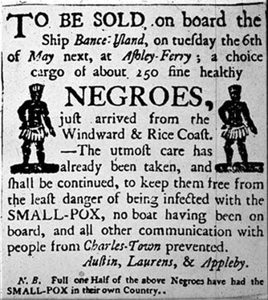
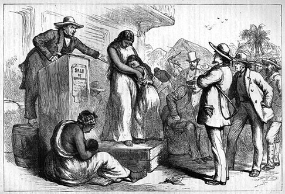
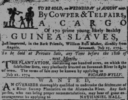
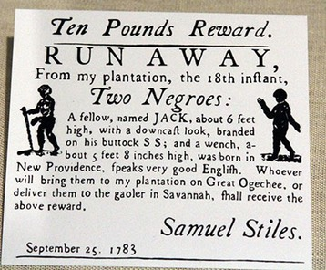

![20120724 - 7-24-2012 The More We Learn - quote from David Rockfeller -_thumb[2]](../../media/20120724---7-24-2012-the.jpeg)


♔ $ $ ₨ ૱ ௹ ﷼ ₹ ₩ ฿ ₮ ₱ ៛ ₭ ₦ $ ♔ $ ₴ ₲ ₪ ₡ ₫ ₵ ₣ ₤ ₧ ℳ ₠ ₢ ₳ $ $ $ ♔
✞ Slavery, Now ♔
➷The NWO BRAND ➷

✑_The Brand is the Slaver’s Mark ✑
Novorossiyan Video Testimony: Prisoners tortured in Ukrainian captivity, forced to run through mine fields, branded with swastikas
Fri, 19 Sep 2014 21:52 CEST
The video below, courtesy of Kazzura on YouTube, shows the testimony of Stankevich Stanislav Nikolayevich, captured on August 24 by the Ukrainian National Guard and recently released (presumably as part of the Minsk-initiated prisoner exchange). He tells of being captured and tortured, showing the wounds his captors burnt onto his body, including a Nazi swastika on his buttocks and lower back. He also tells of Ukrainian troops keeping captured 'separatists' (civilians and militia, men and women) chained in pits, and sending prisoners they didn't like through mine fields, shooting their rifles to spur them on, killing them.
UA troops tortured captive militia soldier, burned swastika on his skin. [eng subs] Published on Sep 18, 2014
What Ukraine is seeing isn't just the resurgence of fascism. It is the process of ponerization; the creation of a pathocracy, where psychopaths achieve positions of power, creating a system where more psychopaths are free to express their true nature at all levels of society. Particularly in armed conflict, this means things like what you can see described in the video above: torture, sadism, murder, debasement. The process of a total 'rebuilding' of worldview is described in detail in Dr. Andrew Lobaczewski's book on the subject: Political Ponerology: A Science on the Nature of Evil Adjusted for Political Purposes.
The next video shows testimony from a woman, Alla Andreyevna Belousova, who had done humanitarian work delivering food to people in besieged cities. She also tells of being tortured, being called 'separatist scum', 'terrorist'. They offered another prisoner to rape her in order to secure release. She also tells of prisoners being branded, captors raping women, and cruel and sadistic methods of execution.
Interview with woman freed from UA captivity [eng subs] Published on Sep 19, 2014
➷ ➷ ➷ ➷ ➷ ➷ ➷ ➷ ➷ ➷ ➷ ➷ ➷ ➷ ➷ ➷ ➷ ➷ ➷ ➷ ➷ ➷ ➷ ➷ ➷ ➷ ➷ ➷ ➷ ➷ ➷ ➷ ➷ ➷ ➷ ➷ ➷ ➷
SOLDIER BRANDED: https://www.youtube.com/watch?v=_6zEPl_VYlI
WOMAN FREED: https://www.youtube.com/watch?v=yfDrK6mZOqY
♔ $ $ ₨ ૱ ௹ ﷼ ₹ ₩ ฿ ₮ ₱ ៛ ₭ ₦ $ ♔ $ ₴ ₲ ₪ ₡ ₫ ₵ ₣ ₤ ₧ ℳ ₠ ₢ ₳ $ $ $ ♔
✞ Slavery, Then ♔
✍$laves to America♔
Who Brought The Slaves To America

Article by Walter White Jr., 1968
The story of the slaves in America begins with Christopher Columbus. His voyage to America was not financed by Queen Isabella, but by Luis de Santangelo, who advanced the sum of 17,000 ducats (about 5,000 pounds-today equal to 50,000 pounds) to finance the voyage, which began on August 3, 1492.
Columbus was accompanied by five 'maranos' (Jews who had foresworn their religion and supposedly became Catholics), Luis de Torres, interpreter, Marco, the surgeon, Bemal, the physician, Alonzo de la Calle and Gabriel Sanchez (1).
Gabriel Sanchez, abetted by the other four Jews, sold Columbus on the idea of capturing 500 Indians and selling them as slaves in Seville, Spain, which was done. Columbus did not receive any of the money from the sale of the slaves, but he became the victim of a conspiracy fostered by Bemal, the ship's doctor. He, Columbus, suffered injustice and imprisonment as his reward. Betrayed by the five maranos (Jews) whom he had trusted and helped. This, ironically, was the beginning of slavery in the Americas (2).
The Jews were expelled from Spain on August 2, 1492, and from Portugal in 1497. Many of these Jews emigrated to Holland, where they set up the Dutch West Indies Company to exploit the new world.
In 1654, the first Jew, Jacob Barsimson, emigrated from Holland to New Amsterdam (New York) and in the next decade many more followed him, settling along the East Coast, principally in New Amsterdam and Newport, Rhode Island. They were prevented by ordinances issued by Governor Peter Stuyvesant from engaging in the domestic economy, so they quickly discovered that the territory inhabited by the Indians would be a fertile field. There were no laws preventing the Jews from trading with the Indians.
The first Jew to begin trading with the Indians was Hayman Levy, who imported cheap glass beads, textiles, earrings, armbands and other cheap adornments from Holland which were traded for valuable fur pelts. Hayman Levy was soon joined by Jews Nicholas Lowe and Joseph Simon. Lowe conceived the idea of trading rum and whiskey to the Indians and set up a distillery in Newport, where these two liquors were produced. Within a short time there were 22 distilleries in Newport, all of them owned by Jews, manufacturing and distributing 'firewater.' The story of the debauching of the Indians with its resultant massacres of the early settlers, is a dramatic story in itself.
It is essential to comprehend the seaport of Newport. It is important in order to recognize the Jewish share in the Slave commerce. There was a period when it was commonly referred to as 'The Jewish Newport-World center of Slave Commerce.' All together, at this time, there were in North America six Jewish communities: Newport, Charleston, New York, Philadelphia, Richmond, and Savanuah. There were also many other Jews, scattered over the entire East Coast. Although New York held first place in the settlers of Jews in North America, Newport held second place.
New York was also the main source of Kosher meat, supplying the North American settlements, then the West Indies and also South America. Now Newport took over! Newport also became the great trade harbour of the East Coast of North America. There, vessels from other ports met, to exchange commodities. Newport, as previously mentioned, represented the foremost place in the commerce of rum, whiskey, and liquor dealings. And to conclude, it finally became the Main Center of Slave dealings. It was from this port that the ships left on their way across the ocean, to gather their black human cargo and then derive great sums of money in exchange for them.

An authentic, contemporary report, based on authority, indicates that of 128 Slave ships, for instance, unloaded in Charleston, within one year, their "Cargo," 120 of these were undersigned by Jews from Newport and Charleston by their own name. About the rest of them, one can surmise, although they were entered as Boston (1), Norfolk (2), and Baltimore (4), their real owners were similarly the Jewish slave dealers from Newport and Charleston.
One is able to assess the Jewish share in the entire dealings of the Newport, if one considers the undertaking of a lone Jew, the Portuguese, Aaron Lopez, who plays an important part in the over-all story of the Jews and Slavery.

Concerning the entire commerce of the Colonies, and the later State of Rhode Island, (which included Newport) bills of lading, concessions, receipts, and port clearances carried the signature name of the Jew Aaron Lopez (3). This all took place during the years 1726 to 1774. He had therefore more than 50% of all dealings under his personal control for almost fifty years. Aside from that there were other ships which he owned, but sailed under other names.
Aaron Lopez In the year 1749, the first Masonic Lodge was established. Ninety percent of the members of this first lodge, fourteen all told, were Jews. And one knows that only so-called "prominent" individuals were accepted. Twenty years later, the second Masonic Lodge, "King David," was established. It is a fact that all of these members were Jews.
In the meantime, the Jewish influence in Newport had reached such proportions that President George Washington decided to pay them a visit. Upon his appearance, both of the Masonic Lodges sent an emissary—a Jew named Moses Seixas (4) —to approach the President with a petition, in which the Jews of Newport stated: "If you will permit the children of Abraham to approach you with a request, to tell you that we honor you, and feel an alliance...... and then: "Until the present time the valuable rights of a free citizen have been withheld. However, now we see a new government coming into being based on the Majesty of the people, a government, not sanctioning any bigotry nor persecution of the Jew, rather, to concede the freedom of thought, which each shares, whatever Nation or Language, as a part of the great Government machine."
It is necessary at this point to consider the disclosures as to who in reality obtained this legendary freedom in America at the founding of the Union. To be sure, the province became independent and severed from the English Jurisdiction. However, we can see from the petition (5) which Moses Seixas offered President Washington in the name of the Jews of Newport, that it was not in reality this type of freedom which they had in mind. They were merely concerned about themselves, and their "own civil rights," which had been withheld. Therefore, following the Revolutionary War, the Jews were accorded equal rights, and freed of all restrictions! And the Negroes? The Revolutionary War not withstanding, they remained Slaves! In the year 1750, one sixth of the population in New York was Negroid, and proportionately in the Southern parts of the Country, they outnumbered the others, but the proclamation of Freedom did not touch them. More of this later.
Let us scrutinize at close range this dismal handwork of the Jews which gave them influence and power, so we may comprehend the Slave Trade; for there has been so much written since that time by the zealous Jewish writers, that at the present, long since removed, it might appear natural, for the time element has a tendency to make things nebulous.
Let us follow the journey of one ship, owned by a slave dealer, Aaron Lopez, which had made many trips to the African coast.

For instance, in the month of May, 1752, the ship "Abigail" was equipped with about 9,000 gallons of rum, a great supply of iron foot and hand restraints, pistols, powder, sabres, and a lot of worthless tin ornaments, and under the command of the Jewish Captain Freedman, sailed off for Africa. There were but two Mates and six sailors comprising the crew. Three and one half months later they landed on the African Coast. Meantime, there had been constructed an African Agency, by the Jewish slave dealers, who had corralled them, and prepared them for sale. This organization reaching deep into Africa, had many ramifications, including the heads of groups, villages, etc. This method to win over these leaders for the Jewish slave trade, was similar to' that which the Jews had employed with the Indians.
At first, they presented them with rum, and soon found themselves in an alcoholic delirium. When the gold dust, and ivory supply was exhausted, they were induced to sell their descendants. At first their wives, and then their youths. Then they began warfare among each other, plotted and developed mostly by the Jews, and if they captured prisoners, these, too, were exchanged for rum, ammunitions and weapons to the Jews', using them for further campaigns to capture more Negroes. The captured Blacks were linked two by two and driven through the medieval forests to the coast. These painful treks required weeks, and some of them frequently became ill, and felled by exhaustion, and many unable to rise even though the bull whip was applied as an encourager. They were left to die and were devoured by wild beasts. It was not unusual to see the bones of the dead laying in the tropical sun, a sad and gruesome reminder to those who would later on tread this path.

It has been calculated that for each Negro who withstood the rigors of this wandering, there still had to be the long voyage across the ocean, before they reached American soil, nine out of ten died! And when one considers that there was a yearly exodus of ONE MILLION black slaves, then, and only then, can one assess the tremendous and extensive exodus of the African people. At present Africa is thinly populated, not alone due to the 1,000,000 literally dragged out of huts, but due to the five to nine million who never reached their destination. Once they reached the coast, the black slaves were driven together, and restraints were applied to hold them until the next transport ship docked. The agents—many of them Jews—who represented the Chief, then began the deal with the Captain. Each Negro was personally presented to him. But the captains had learned to become suspicious. The Black one must move his fingers, arms, legs, and the entire body to insure that there were not any fractures. Even the teeth were examined. If a tooth was lacking, it lowered the price. Most of the Jew agents knew how to treat sick Negroes with chemicals in order to sell them as sound. Each Negro was valued at about 100 gallons of rum, 100 pounds of gun powder, or in cash between 18 to 20 dollars. The notations of a captain inform us that on September 5, 1763, one Negro brought as much as 200 gallons of rum, due to the bidding among the agents, raising the price.

Women under 25 years, pregnant or not, resulted in the same measure, if they were well and comely. Any over 25 years lost 25%.
And here it should be stated that those Negroes, purchased free at the African Coast for 20 to 40 dollars, were then resold by the same slave dealers in America for two thousand dollars.
This gives one an idea how the Jews managed to acquire tremendous fortunes. Following the bargaining, Captain Freedman paid the bill, either in merchandise or cash. He also recalled some advice which his Jewish employers gave him as he left Newport for Africa: "Pour as much water into the rum as you possibly can." In this manner the Negro chiefs were cheated two times by the Newport Jews!
The next step was to shave the hair from the head of the acquired slaves. Then they were bound and branded with a hot iron, either on the back, or the hip, identifying them with their owners. Now the Negro slave was indeed the property of the Jewish purchaser. If he fled he could be identified. Following this procedure, there was a farewell celebration. There were instances when entire families were brought out of the interior, to the coast, and then separated through the buyer—the father going with one ship, the sons and daughters into another. These "farewell" celebrations were usually packed with emotion, tears, drama and sadness. There was little joy, if ever.
The following day the transport began from land to ship. It was managed by taking four to six Negroes at one time in rowboats to the ship. Of course the slave dealers were aware of how the Negro loved his homeland above all else, and could only be induced by great force to leave it. So, some of the Negroes would leap into the water. But here the overseers were prepared with sharp dogs and retrieved the fleeing men. Other Negroes preferred drowning. What came aboard alive was immediately undressed. Here was another opportunity to jump overboard and reach land and freedom. But the slave dealers were pitiless and ruthless; they were merely concerned to get their Black cargo to America with the least loss. Therefore, an escapee, recaptured, had both of his legs cut off before the eyes of the remaining Negroes in order to restore "Order."
On board the ship the Negroes were separated into three groups. The men were placed in one part of the ship. The women into another, whereby the lusty Captain arranged it so that the youngest, mostly comely Negro women were accessible to him.
The children remained on deck, covered with a cloth in bad weather. In this fashion the slave ship proceeded on its journey to America. In the main, the ships were too small, and not at all suitable to transport people. They were barely equipped to transport animals, which the Negroes were likened to. In one space, one meter high (39 inches) these unfortunate creatures were placed into a horizontal position, pressed close together. Mostly they were chained together. In this position they had to remain for three months, until the end of the voyage. Rarely was there a captain who sympathized with them or evidenced any feelings whatever for these pitiable creatures. Occasionally they would be taken in groups to the deck for fresh air, shackled in irons.
Somehow, these Negroes were expendable and endured much. On occasion, one of them became insane, killing the other one pressed closely to him. They also had their fingernails closely cut so they could not tear at each other's flesh. The most horrible battles came about among the men, to acquire a centimeter or two for a comfortable position. It was then that the slave overseer stepped in with his bullwhip. The unimaginable, horrible, human excrement in which these slaves had to endure these trips is impossible to describe.
In the women's quarters the same conditions prevailed. Women gave birth to children lying pressed closely together. The younger Negro women were constantly raped by the captain and the crew resulting, thereby, a new type of Mulatto as they came to America.

In Virginia, or in any of the other Southern port cities, the slaves were transferred to the land and immediately sold. A regular auction would take place, following the method of purchase in Africa. The highest bidder obtained the "Ware." In many cases—due to the indescribable filth—some of the Blacks became ill during the sea voyage from Africa to America. They became unemployable. In such cases the captain accepted any price. It was rare to dispose of them for no one wanted to purchase a sick Negro. Therefore, it is not surprising that the Jewish, unethical doctor senses a new form of revenue. They purchased the sick Negro for a small sum, then treated him, and sold him for a large sum. On occasion, the captain would be left with a few Negroes for whom he did not find a buyer. In that case he returned to Newport and sold them to the Jews for cheap domestic help. In other cases, the Jew owner of the ships took them over. This is why the city of Newport and its surroundings had 4,697 black slaves in the year 1756.

Slavery did not extend to the North. Moreover, in many of the North American Colonies, slavery was strictly forbidden. Georgia came under discussion; likewise also Philadelphia. And again it was the Jews who managed a loophole, which had given them freedom following the Revolutionary War, so, they schemed to make slave trading legal.
One had but to read the names of those persons living in Philadelphia who were requesting the elimination of existing laws regarding the slavery dealing. They were: the Jews Sandiford, Lay, Woolman, Solomon, and Benezet. That explained it all! But let us turn back to the slave ship "Abigail." Its captain—and we are reading from his ship's books—did a profitable business. He sold all of his Negroes in Virginia, invested some of the money in tobacco, rice, sugar, and cotton, and went on to Newport where he deposited his wares.
We learn from Captain Freedman's books that the "Abigail" was a small ship and could only accommodate 56 people. He managed, however, to clear from one trip 6,621 dollars, which he in turn delievered to the owner of the ship: one Aaron Lopez.
The staggering amounts of money acquired by the Jew ship owners and slavery dealers is better illustrated when we emphasize the many years in which this sale and purchase of human flesh was practiced. Prior to 1661, all of the Colonies had laws prohibiting slavery. It was in that year that the Jews had become powerful enough to bring about the repeal of these laws, and slavery began in earnest.
The Jews had discovered that the Colonists needed additional manpower to help them clear their fields for planting, helping in the construction of dwellings, and in general to help with harvesting their crops. This was particularly true of the Southern states which we have referred to earlier. The Southerners had vast tracts of rich soil suitable for rice, cotton, tobacco and cane sugar. At first, impoverished Europeans were recruited. English prison doors were opened and finally prisoners ot war from England and Holland were brought to the Colonies, made to work until they had paid the cost of transporting them by ship and then set free.

It doesn't take a Jew long to discover what his brothers are doing, so a group of Jews settled in Charleston, South Carolina, where they set up distilleries for making rum and whiskey. They, too, learned that they could trade with the natives on the West Coast of Africa for ivory, and several ships were purchased and sent to Africa, trading the usual glass beads and other cheap ornaments for ivory, which, however, took up but little space on board ship. It occurred to these Jew traders that they could supply the plantations in the South with 'Black ivory', needed under swampy and malarial conditions which European labor could not tolerate without sickness, and which would not only fill the holds of their ships, but bring enormous profits. (This same group had earlier tried selling Indians as slaves but they found them completely unsatisfactory, as the Indians would not tolerate this type of work.) Thus, another segment of the slave trading had become active and profitable out of Charleston, South Carolina. Several shiploads of Black slaves were sent by the Dutch West Indies Company to Manhattan.
During this time there were a number of plantation owners established in the West Indies and two Jews, Eyrger and SayUer, with strong Rothschild connections in Spain, formed an agency called ASIENTO, which later operated in Holland and England. It was through these connections that Jews in Holland and England exerted influence and both of these connections cooperated in helping the Jews provide Black Slaves for the Colonists.
With the yearly capture and transport of one million Black slaves it is not difficult to figure that from 1661 to 1774 (one hundred thirteen years) approximately one hundred ten million slaves had been removed from their native land. About ten percent, or ELEVEN MILLION, Black slaves reached the Colonies alive.

We have talked about the small ship "Abigail" which could accommodate only 56 people and yet the profits per trip were enormous, with little or no investment. There were many other ships but we will concentrate here on only a few, such as the "La Fortuna," "Hannah," "Sally" or the "Venue" which made very great profits. The "La Fortuna," by the way, transported approximately 217 slaves on each trip. The owner cleared not less than $41,438.00 from such a trip. These were dollars which the slave dealers 'could keep'. And these were dollars of value which would buy a great deal in return.
When one considers that the Jews of Newport owned about 300 slave-transporting ships, active without interruption, docking at Newport-Africa, Charleston, (or Virginia), one can approximate the tremendous earnings which made their way to Jewish ship owners. Indeed, the Jews admit, that of the 600 ships, leaving Newport harbor into all the world, "at least half of them" went their way to Africa, and we know what these ships going to Africa "were seeking."
The fact that Aaron Lopez had control of over more than half of the combined deals in the Colonies of Rhode Island, with Newport, is well-known. The well-known Rabbi Morris A. Gutstein, in his book, The Story of the Jews in Newport, attempts to remove these facts, maintaining that there is not any evidence that the Jews were connected with the Slave Trade. It is therefore imperative to prove that the Jew was indeed connected with the slave trading. Especially so since this rabbi insists they had made great contributions, and how very "blessed" their residence became for the city of Newport. Surely Morris A. Gutstein will grant us permission to present the facts which he was unable to find.
Turning to one report of the Chamber of Commerce of the "Rhode Island Colony" in the year 1764, we find, for instance, that in the year 1723 "a few merchants in Newport" devised the idea to send their Newport rum to the coast of Africa. It developed into such a great export that in the matter of a few years "several thousand (hogsheads)" of rum went that way. To which purpose did this rum serve?
The Carnegie Institute in Washington, D.C., presents and makes public authentic documents entitled "Documents Illustrative of the History of the Slave Trade in America". We wish to present a few facts from this particular collection of original documents and scrutinize them at closer range, and not at all to prove the heretofore Rabbi Morris A. Gutstein in error. In this collection of the first American institute of learning, we evaluate the capital "Rhode Island" which contributed the main share of the public documentation regarding the Slave trading. Here we find documented the recipients of the numerous shipping letters, also letters to the Slave dealers, and correspondence to the ship's captains, who were about 15% Jews, living in Newport. Among these we find, for instance, the Jew Isaac Elizar. He wrote a letter to Captain Christopher Champlin on February 6, 1763, saying he would like to be an agent for a load of slaves. Then follows the Jew Abraham Pereira Mendez, and one of the main slave dealers, Jacob Rod Rivera-the father-in-law of Aaron Lopez. And then there is Aaron Lopez, himself, and many, many more other Jews. Although we have considered Aaron Lopez several times, the size of this documented treatise limits us, and we cannot describe all of the writers concerned in the Slavery Dealing correspondence, their names and the special dates—rather, we wish to study the documentation of the 'Carnegie Institute' itself—keeping Aaron Lopez in mind. We wish to see what in the main this Jew was pursuing and what his business was. This is due to the fact that Rabbi Morris A. Gutstein presents him as a "lofty and fine civilian of Newport" who was so generous and even "made contributions to welfare."
In a great number of published original unprejudiced writings in the Carnegie Institute, we find that Aaron Lopez pursued a tremendous commerce in rum with the African coast in exchange for slaves. These irrefutable facts are as follows:
- June 22, 1764, a letter by Captain William Stead to Aaron Lopez.
- July 22, 1765, a letter by Aaron Lopez to Captain Nathaniel Briggs.
- July 22, 1765, a letter to Captain Abraham All.
- February 4, 1766, a letter to Captain William Stead by Aaron Lopez.
- March 7, 1766, a letter by Captain William Stead to Aaron Lopez.
- February 20, 1766, a letter by Aaron Lopez to Captain William Stead.
- October 8, 1766, a letter by Captain William Stead to Aaron Lopez.
- February 9, 1767, a letter by Captain William Stead to Aaron Lopez.
Aside from that, there are similar statements out of letters by Aaron Lopez in the original, which he directed to the Captains Henry Cruger, David Mill, Henry White, Thomas Dolbeare, and William Moore. Indeed, one letter by Captain William Moore to Aaron Lopez & Company, is particularly revealing, and of special mention at this point. We wish to remark on the main contents of this letter in which Captain Moore writes: "I wish to advise you that your ship 'Ann' docked here night before last with 112 slaves, consisting of 35 men, 16 large youths, 21 small boys, 29 women, 2 grown girls, 9 small girls, and I assure you this is such a one rumcargo (rum in exchange for slaves) which I have not yet encountered, among the entire group there may be five to which one could take exception."
The date of the above letter was November 27, 1773. We have not yet concluded, because of lack of space, the excerpts and grateful compilations made available by the "Carnegie Institute."
On November 29, 1767, the Jew Abraham Pereira Mendez—who had been cheated by one of his kind—from Charleston, where he had journeyed to better control his Black cargo, wrote Aaron Lopez at Newport:
"These Negroes, which Captain Abraham All delivered to me, were in such poor condition due to the poor transportation, that I was forced to sell 8 boys and girls for a mere 27 (pounds), 2 other for 45 (pounds) and two women each for 35 (pounds)." (No doubt, English money)
Abraham Pereia Mendez was very angry and accused Aaron Lopez of "cheating" him. This letter delineates to us that this generous and fine citizen of Newport was insatiable in his greed for money. This is what caused the Rabbi Morris A. Gutstein to present this nobleman, Aaron Lopez, to pursue his objectionable methods. Negroes presented to him but a commodity.
In all of the letters which the "Carnegie Institute" published, it stresses the lack of human sympathy for the poor Negro slaves. This lack of feeling and compassion for the abused and pitiful Blacks at the hands of their Jewish dealers, can be read out of the diary of a captain who manned a ship owned by Aaron Lopez. The entrees concern a trip from the African Coast to Charleston. Moreover, they are authentic documents, published by the "Camegie Institute" in Washington, D.C., calling attention to an organization which had heretofore known little or nothing about; neither had they encountered further publicity in books or newspapers. Therefore, it is not to be wondered at that the facts of the leading share of American Jews in the slave trade could be pointed out as a monopoly, and unknown to the non-Jewish Americans, including the great masses of people all over the world. Others, however, acquainted with the facts, had good reason to remain painfully quiet.
The captain of another ship, the "Othello" among other things, makes the following entries in his diary:
- February 6th: One man drowned in the process of loading.
- March 18th: Two women went overboard because they had not been locked up.
- April 6th: One man dead with Flux. (No doubt an illness.)
- April 13th: One woman dead with Flux.
- May 7th: One man dead with Flux.
- June 16th: One man dead by Kap Henry.
- June 21st: One man dead by James Fluss.
- July 5th: One woman dead with fever.
- July 6th: One girl, sick for two months, died.
This vessel was on its way for five months. What terrible and unspeakable suffering was the lot of these millions of Blacks, who were torn with brutal force from their friendly African huts, jammed together, like animals below deck, and then sold with less concern than selling a head of cattle. Small wonder that ten of them died, being purchased for just a few dollars, and then sold for the sum of $2,000.00.
Some Negroes managed, through insurrection, to gain control of one or another ship and turned it around, with full sails, toward their African home. The crew of one slave ship, "Three Friends" for instance, tortured their Black cargo in such a manner that the Negroes reciprocated in a bloody rebellion. They killed the captain and the entire crew and threw the dead overboard. They then sailed back to Africa where they had barely escaped their hard-won freedom.
A similar fate struck the slave ship "Amistad". Among the slaves was the son of an enemy tribal chief. Once the ship was under way, he schemed with his compatriots to attack the ship's crew. Following a bloody battle, they managed to capture the captain. The Negro prince forced him to turn back to Africa, then in the evening, under cover of darkness, he changed his course, zigzagged for months untfl he came close to the American coast, and encountered a government ship. This took place in the year 1839 when slave trading was already forbidden and illegal.
The Negro slaves were freed and the captain punished. These sea voyages were not without danger when they had Black cargo, which accounts for the fact that the Jews most always engaged non-Jewish captains.
The slave dealers preferred to remain in their offices and counted the fat winnings following each journey, such as Aaron Lopez, who left his heirs one of the largest fortunes in the New England era.
When reviewing the documented facts contained herein, it is important that one always remembers that it was a lucky captain who did not lose more than 9 out of 19 slaves on the return trip.
It is equally important to remember that these poor Black creatures had to lie in human excrement for the entire trip. Think of it! No wonder sickness and disease took such a high toll. Remember the figures: approximately one hundred ten million Black people were captured and removed from their homeland in Africa. Only ELEVEN MILLION of these Black slaves reached the Colonies alive.
And the Jews still talk about the Germans and Hitler and how six million Jews were exterminated during World War II. This is the greatest LIE ever perpetrated upon the people of the world-whereas the story of the poor Black slaves is documented. Documented with TRUTH. The evidence is still available for the people of the world to see.
The "Carnegie Institute of Technology" is located in Pittsburgh, Pennsylvania.
As this document is distributed, eventually reaching the hands of the Jew, the evidence will probably be removed and destroyed until finally all documentation is removed which is damaging to the Jew. The Jews have been engaged in this practice for centuries. Truth, however—truth which bears fact cannot remain covered or hidden forever—and more truths are being disclosed by those of us who intend to free America of these sons of the devil—the Jews.
The published documentation contained herein was obtained from the Carnegie Institute of Learning, presently known as "The Carnegie Institute of Technology."
The following is a partial of the slave ships owned by Jews:
- 'Abigail' by Aaron Lopez.
- Moses Levy and Jacob Franks.
- 'Crown' by Isaac Levy and Nathan Simpson.
- 'Nassau'by Moses Levy.
- 'Four Sisters' by Moses Levy.
- 'Anne & Eliza' by Justus Bosch and John Abrams.
- 'Prudent Betty' by Henry Cruger and Jacob Phoenix.
- 'Hester' by Mordecai and David Gomez.
- 'Elizabeth' by David and Mordecai Gomez.
- 'Antigua' by Nathan Marston and Abram Lyell.
- 'Betsy'by Wm. DeWoolf.
- 'PoUy'by James DeWoolf.
- 'White Horse' by Jan de Sweevts.
- 'Expedition' by John and Jacob Rosevelt.
- 'Charlotte' by Moses and Sam Levy and Jacob Franks.
- 'Caracoa' by Moses and Sam Levy.
Slave-runners, also owned by Jews were the 'La Fortuna', the 'Hannah', the 'Sally', and the 'Venue'.
Some of the Jews of Newport and Charleston who were engaged in the distillery or slavery trade, or both, were: Isaac Gomez, Hayman Levy, Jacob Malhado, Naphtaly Myers, David Hart, Joseph Jacobs, Moses Ben Franks, Moses Gomez, Isaac Dias, Benjamin Levy, David Jeshuvum, Jacob Pinto, Jacob Turk, Daniel Gomez, James Lucana, Jan de Sweevts, Felix (cha-cha) de Souza (known as the 'Prince of Slavers' and second only to Aaron Lopez), Simeon Potter, Isaac Elizer, Jacob Rod, Jacol) Itodrigues Rivera, Haym Isaac Carregal, Abraham Touro, Moses Hays, Moses Lopez, Judah Touro, Abrtham Mendes and Abraham All.
Of some 600 ships leaving the port of Newport, more than 300 were engaged in the slave trade. A typical cargo of one ship, 'La Fortuna', was 217 slaves which cost about $4,300 and sold for $41,438.00.
Only about 10% of the slave ship captains were Jews, not wanting to subject themselves to the rigors of the 6-month journey. They preferred to stay at home and continue their distillery operations which continued to supply rum and whiskey to the Indians for many years at a very great profit.
REFERENCES DOCUMENTATION
Elizabeth Donnan, 4 Vols. Documents Illustrative of the History of the Slave Trade to America, Washington, D.C., 1930-1935.
"Carnegie Institute of Technology," Pittsburgh, Pennsylvania.
Adventures of an African Slaver, by Malcolm Cowley, 1928. Published by Albert and Charles Bori, New York.
The Story of the Jews in Newport, by Rabbi Morris A. Gutstein.
The Jew Discovem America, by Cthmar Krainz.
The International Jew, by Henry Ford.
The Plot Against the Church, by Maurice Pinay.
Protocol for World Conquest, 1956, by The Central Conference of American Rabbis.
Behind Communism, by Frank L. Britton
We cannot undertake even this brief history of the modern Jew without taking note of a phenomenon which his confounded Gentile societies for twenty centuries. This is the ability of the Jewish people to collectively retain their identity despite centuries of exposure to Christian civilization. To any student of Judaism, or to the Jews themselves, this phenomenon is partly explained by the fact that Judaism is neither mainly a religion, nor mainly a raciai matter, nor yet is it simply a matter of nationality. Rather it is all three, it is a kind of trinity. Judaism is best described as a nationality built on the twin pillars of race and religion. All this is closely related to another aspect of Judaism, namely the persecution myth. Since first appearing in history, we find the Jews propagating the idea that they are an abused and persecuted people, and this idea is, and has always been, central in Jewish thinking. The myth of persecution is the adhesive and cement of Judaism: without it Jews would have long since ceased to exist, their racial-religious nationality notwithstanding.
It is a fact that the Jewish people have suffered numerous hardships in the course of their history, but this is true of other peoples too. The chief difference is that the Jews have kept score. We Must repeat—they have kept score—they have made a tradition of persecution.
A casual slaughter of thousands of Chriestians is remembered by no one in 50 years, but a disability visited upon a few Jews is preserved forever in Jewish histories. And they tell their woes not only to themselves, but to a sympathetic world as well.
♔ $ $ ₨ ૱ ௹ ﷼ ₹ ₩ ฿ ₮ ₱ ៛ ₭ ₦ $ ♔ $ ₴ ₲ ₪ ₡ ₫ ₵ ₣ ₤ ₧ ℳ ₠ ₢ ₳ $ $ $ ♔
EDITOR’S NOTE: The problem Mr. White is having with his analysis stems from speaking about a people when he’s in fact discussing a subset that makes victims of its own less important individuals and populations in order to provide a ready made source of cover and righteous indignation when confronted. -Laurens
♔ $ $ ₨ ૱ ௹ ﷼ ₹ ₩ ฿ ₮ ₱ ៛ ₭ ₦ $ ♔ $ ₴ ₲ ₪ ₡ ₫ ₵ ₣ ₤ ₧ ℳ ₠ ₢ ₳ $ $ $ ♔
The following references were added by the (original) editor to facilitate your research.
- Ref. The International Jew by Henry Ford
- Adventures of an African Slaver by Malcolm Cowley, 1928, p.11
- Aaron Lopez and his family arrived in Newport around 1750 from New York via Lisbon, Portugal. Lopez arrived in the new world as a member of a "Marrano" family with the Christian name of "Don Duarte Lopez." Lopez immediately dropped his Christian name and took the Hebrew name of Aaron and submitted to ritual circumcision. Within twenty years, Lopez owned or had interests in over 80 sailing vessels. Lopez was also one of the original founders and contributors of Touro Synagogue and by the end of his life was recognized as one of the "Merchant Princes" of early America. His merchant trading interests included rum, molasses, dry goods and African slaves.
- Moses Levy and the Moses Seixas families both lived in one of Newport's large colonial mansions at 29 Touro Street. Seixas was a founding member of the nation's oldest Jewish Masonic Lodge (King David in Newport) and Grand Master of the Masonic Order of Rhode Island. Seixas was well known as the Cashier of the Bank of Rhode Island. President (Parnas) of Touro Synagogue at the time of the George Washington visit and letter to the congregation, Seixas also performed the Covenant of Circumcision (B’rith Milah). Prominent merchant and trader Moses Levy of New York and Newport was one of several Ashkenazi Jewish families in Newport at that time. Levy owned the Touro Street Mansion and willed the property to Moses Seixas in 1792.
- "Sir: Permit the children of the stock of Abraham to approach you with the most cordial affection and esteem for your person and merit, and to join with our fellow-citizens in welcoming you to Newport. ...
Deprived as we hitherto have been of the invaluable rights of free citizens, we now-with a deep sense of gratitude to the Almighty Disposer of all events — behold a government erected by the majesty of the people-a government which to bigotry gives no sanction, to persecution no assistance, but generously affording to all liberty of conscience and immunities of citizenship, deeming every one of whatever nation, tongue, or language, equal parts of the great governmental machine.
This so ample and extensive Federal Union, whose base is philanthropy, mutual confidence and public virtue, we cannot but acknowledge to be the work of the great God, who rules in the armies of the heavens and among the inhabitants of the earth, doing whatever seemeth to Him good.
For all the blessings of civil and religious liberty which we enjoy under an equal and benign administration, we desire to send up our thanks to the Ancient of days, the great Preserver of men, beseeching Him that the angels who conducted our forefathers through the wilderness into the promised land may graciously conduct you through all the difficulties and dangers of this mortal life; and when, like Joshua, full of days and full of honors, you are gathered to your fathers, may you be admitted into the heavenly paradise to partake of the water of life and the tree of immortality.
Done and signed by order of the Hebrew Congregation in Newport, Rhode Island, August 17, 1790.
Moses Seixas, Warden"
♔ $ $ ₨ ૱ ௹ ﷼ ₹ ₩ ฿ ₮ ₱ ៛ ₭ ₦ $ ♔ $ ₴ ₲ ₪ ₡ ₫ ₵ ₣ ₤ ₧ ℳ ₠ ₢ ₳ $ $ $ ♔
Visitors to LM:GNC
Leuren Moret: Global Nuclear Coverup
- ❁ Currents
- ⚛ Radiation Omnicide 👥
- 🎥 UC, Davis, Katehi, Illuminati ✠
- 🌎✟☦ One World Religion 🎭
- ♞ Atlanticists v. Putin et al ⚪️
- ✈️ 3 NWO False Flags Connected ➷
- 🔪Ukrainian ✠ Wikileaks 👀 Interview 🎥
- 🚫 Out of Eurasia 🚫
- 💀 Jade Helm, International Implications, NWO Rollouts ⏰
- 🌿 Essential Oils, Nutrition, Frequencies & Health 🌺
- 🎯 R.F.D.E. | H.A.A.R.P. | N.L.P. ⚡️
- ⚛ Leuren Moret: Hiroshima, Nagasaki, Fukushima ⚛
- ❦ Moret & Battis: Jade Helm ❦
- 🌎 New World Order America 🇺🇸
- ⨳ Geopolitics Ukraine | E.U. Judo 🌍
- 👥 Template: Jade Helm
- ✠ America’s Domestic Pacification ✠
- ♨️ Chernobyl, Zaporozhye, Blackmail ⚛
- 💉 REBRANDING DISASTER🔪
- 👤 Eurasian Enigma Arises
- 🔴 Donetsk Nuclear Explosion ⚫️
- 🌍 21st Century Silk Road 🌏
- 🌍 Africa ☗
- ♞ Balkans, The Nameless Triangle
- 🌏 China 🌝
- 🌍 Eurasia 🔴
- 💣 Israel: Out of Erupt!
- ✠ Jesuits/Templar’s Origins & Aims
- 👺 SOROS ✠ NWO 📚 Hacked ✍
- ➴ Pyatt’s ✠ SOROS ♞ Breakfast 🍳
- Breedlove, GOOD RIDDANCE
- 🎱 Obama’s $3 Billion Eurocon 💸
- 🌍 A Psychopath’s Psychopath ✠
- 🔫 Global Hit Squad 💣
- 💀 Neo-Capitalist’s Slave Trade 💰
- 🇺🇸 Bio: Undermine Control
- ↷ Fine Evening For A Minuet ↶
- ✠ Slavery, Then & Now
- 💣 JCS Operation Northwoods
- ✠ The Three Secret Meetings
- Korea Yeonhee (연희) Nuclear Kabuki Theatre
- 🌍 Middle East 💣
- 💣 ISIL: Battered, Retreating 💀
- 🔥 Turkish Coup Attempt 💣
- ⚑ Muslim Brotherhood and ISIS ⚫️
- 🔫💰💉Daesh Terrorist Multi-Tool🔪💣💊
- 🚧 US and Turkey, NWO the Kurds 💸
- ✠ Hitler Bragged on Jesuits ✠
- 🍞 Their Daily Bread & Rubble 💣
- 🔪“Erdogan is Strengthening ISIS”💣
- 🇫🇷 Russia Reveals ISIS’ Money 💰💰
- "Raqqa's Rockefellers” ISIS Full Frontal
- ☞ Smashing Turkey’s Game❌
- 🌍 Juncker | E.U. | Direction ⤣
- 🔪 GLADIO Wolf Kills Russian Pilot ✈︎
- ✈︎ Washington’s SU-24 🎯
- 🌐 Turkey, NATO, War Crime? 🔎
- ➷ 449-Down, ISIL to Go 💣
- 🌎 North America 🔥✠
- 🇷🇺 Russia 🇷🇺
- 🇷🇺 PUTIN OVERHAULS KREMLIN 🏰
- ☛ Who Created ISIS ☚
- 🍳 Food Supply Compromised 🎱
- 🌍 Putin re Ceasefire Syria 🌐
- 👤 Cold War Re-Run 👀
- 🌐 Minsk 101 | Theatre of the Absurd 🌍
- 🌐 Geopolitical Original Sin 🌍
- ♘ Russian Troops | Turkish Border ♘
- 📚 Educating Charlie Rose 🔑
- 🌍 Lavrov's Munich Speech
- 🎱 US Embassy Media Fail 🎭
- ✠ ♛🃏 Putin’s Jar Of Spiders
- 🎱 MOSSAD’S ON THE DOORSTEP 💣
- 📄 This Document is Dynamite 📄
- ♔ The Golden Trap
- ❁ Russian Fusion-Fission
- ❁ Putin’s 7-Point Plan
- ❁ Russian Position Speech
- ✈︎ Ukraine, MH-17, Jesuits Flagged! BRICS Undermined?
- ⏰ Ukraine? 🔥 Bail Out! ✈️
- 💦👤 Psychotropic Zombification ☔️
- 💣 Odessa Trade Union Murders 🔥
- 🃏 Nothing Personal, Just Business 💰
- 💉 BioWeapons for Depopulation 💀
- ⚛ Nuclear Coverup Ukraine | Mines of Zholti Vody 💀
- 🔥 Unsustainable Ukraine 👥
- ☗ ASHES TO ASHES 💀
- 🔪Ukrainian Wikileaks 👀
- ☞ Dispatches From the Front 🔫
- 💣 The Ukrainian Failed State 🌍
- 🔑 Our Decisions Define Us🔑
- ✠ Child Abuse 💀
- 💣 Mozgovoi’s Murder 🔪
- 🎱 Yatsenyuk's Russian Threat 🔮
- ||| Prison Ukraine |||
- ✍ CyberBerkut Reports 👥
- ♨️ Crazy Arseniy’s -USED- Ukraine Fire Sale! ♨️
- ✝ AZOV CRUCIFIXION ✝
- 👤 Eyewitness Debaltsevo Cauldron 💀
- ✍ Historic Slaviansk Doctor Interviewed
- 💀 The Tragedy of Uglegorsk
- ♟ Jan. 2015 Minsk Fail 🃏
- ➷ Tochka Found, Debaltsevo Locked
- 🌍 World Facing Second Chernobyl
- ✈︎ MH-17 AND THE Jesuit Minuet
- ✈︎ MH-17, Jesuits Flagged!, Video
- 💀 Death’s Drummers
- 👤 DPR! Novorossiya Calling
- 💀 Ukraine’s Chernobyl Armor
- 🎱 Gas to Ukraine Blocked
- ❁ Global Nuclear Theatre: Donbass
- ✠ GHOSTS of the 51st BRIGADE
- ❁ Novorossiya: Strelkov Briefing
- 👤 Open Letter to President Putin
- ✈︎ MH-17 Dutch Interim Report
- 💣 Surrendering UA Murdered by Punatives
- ♟ Mutiny of the Euro-Integrators ♟
- ➹ View from Ukraine Operating Room
- ❁ Ukraine’s Violent Escalation
- ❁ Ukrainian Soldier’s Cry for Help
- ⧱ Occupied Ukraine ⧱
- ❁ US State's Nuland Directs Ukrainian Coup
- 📯 Ukraine Deputies Knew Before Maidan
- ❁ Health In 2015
- 💉 Vaccines 💀
- 🎥 Geopolitics, Jesuits & History
- 🎥 Rebranded ✠ The Jesuits ✠
- ⚛ Zaporhyze Nuclear Events & Geopolitics
- ❁ Fukushima Polar Vortex Radiation ❁
- 💀 Embrace, Enfold, Extinguish
- ✈︎ Fear of Flying . . . (1of4)
- ❁ Fukushima: Impact of Fallout On Oceans (Pt.1)
- ❁ Fukushima: Impact of Fallout On Oceans (Pt. 2)
- ❁ North America, Middle East and Fukushima
- ❁ DHS/Napolitano Berkeley Template
- ❁ Fukushima Radiation, Ecocide & Tesla Technology
- ✈︎ Flight 370 Downing
- ✈︎ MH370: The Follow-Up
- ❁ Domestic Radiation Issues
- ❁ Fukushima: Hawaii, Pacific Is. - Unsafe
- ⚛ Fukushima Reactors, Breakdown 1-6 ⚛
- 🌏 International Sites Featuring LM:GNC
- ❁ On To Mongolia 🎥
- 🎥 LKM On Fairdinkum Media 🎥
- ❁ Editorial Page
- ❁ Conversations 📬
- ❁ Waves
- ⚛ Radiation Around The Nation 🌎
- ⚛ Your Radiation #73/74, Sep 10 - 24, 2016 🌎
- ⚛ Your Radiation #71/72, Aug 27 - Sep 10, 2016 🌎
- ⚛ Your Radiation #69/70, July 30 - August 13, 2016 🌎
- ⚛ Your Radiation #67/8,--July 16-30, 2016 🌎
- ⚛ Your Radiation #65-6,--July 2-16, 2016 🌎
- ⚛ Your Radiation #64, July 2-9, 2016 🌎
- ⚛ Your Radiation #62-3, June 18 - July 2, 2016 🌎
- ⚛ Your Radiation #61, June 11-18, 2016 🌎
- ⚛ Your Radiation #60, June 4-11, 2016 🌎
- ⚛ Your Radiation #59, May 28 - June 4, 2016 🌎
- ⚛ Your Radiation #58, May 21-28, 2016 🌎
- ⚛ Your Radiation #57, May 14-21, 2016 🌎
- ⚛ Your Radiation #56, May 7-14, 2016 🌎
- ⚛ Your Radiation #55, Apr 30 - May 7, 2016 🌎
- ⚛ Your Radiation #54, Apr 23-30, 2016 🌎
- ⚛ Your Radiation #53, Apr 16-23, 2016 🌎
- ⚛ Your Radiation #52, Apr 9-16, 2016 🌎
- ⚛ Your Radiation #51, Apr 2-9, 2016 🌎
- ⚛ Your Radiation #47-50, Mar 5 - Apr 2, 2016 🌎
- ⚛ Your Radiation #46, Feb 27-Mar 5, 2016 🌎
- ⚛ Your Radiation #45, Feb 20-27, 2016 🌎
- ⚛ Your Radiation #44, Feb 13-20, 2016 🌎
- ⚛ Your Radiation #43, Feb 6-13, 2016 🌎
- ⚛ Your Radiation #42, Jan 30 - Feb 6, 2016 🌎
- ⚛ Your Radiation #41, Jan 23-30, 2016 🌎
- ⚛ Your Radiation #40, Jan 16-23, 2016 🌎
- ⚛ Your Radiation #39, Jan 9-16, 2016 🌎
- ⚛ Your Radiation #38, Jan 2-9, 2016 🌎
- ⚛ Your Radiation #37, Dec 26 - Jan 2, 2015|16 🌎
- ⚛ Your Radiation #36, Dec 19-26, 2015 🌎
- ⚛ Your Radiation #35, Dec 12-19, 2015 🌎
- ⚛ Your Radiation #34, Dec 5-12, 2015 🌎
- ⚛ Your Radiation #33, Nov 28 - Dec 5, 2015 🌎
- ⚛ Your Radiation #32, Nov 21-28, 2015 🌎
- ⚛ Your Radiation #31, Nov 14-21, 2015 🌎
- ⚛ Your Radiation #30, Nov 7-14, 2015 🌎
- ⚛ Your Radiation #29, Oct 31 - Nov 7, 2015 🌎
- ⚛ Your Radiation #28, Oct 24-31, 2015 🌎
- ⚛ Your Radiation #27, Oct 17-24, 2015 🌎
- ⚛ Your Radiation #26, Oct 10-17, 2015 🌎
- ⚛ Your Radiation #25, Oct 3-10, 2015 🌎
- ⚛ Your Radiation #24, Sep 26 - Oct 2, 2015 🌎
- ⚛ Your Radiation #23, Sep 19-26, 2015 🌎
- ⚛ Your Radiation #22, Sep 12-19, 2015 🌎
- ⚛ Your Radiation #21, Sep 5-12, 2015 🌎
- ⚛ Your Radiation #20, Aug 29 -Sep 5, 2015 🌎
- ⚛ Your Radiation #19, Aug 22-29, 2015 🌎
- ⚛ Your Radiation #18, Aug 15-22, 2015 🌎
- ⚛ Your Radiation #17, Aug 8-15, 2015 🌎
- ⚛ Your Radiation, August 1-8, 2015 🌎
- ⚛ Your Radiation, July 24-31, 2015 🌎
- ⚛ Your Radiation, June 26 - July 24, 2015 🌎
- ⚛ Your Radiation, June 19-26, 2015 🌎
- ⚛ Your Radiation, June 12-19, 2015 🌏
- ⚛ Your Radiation, June 5-12, 2015 🌎
- ⚛ Your Radiation, May 29 - June 5, 2015 🌎
- ⚛ Your Radiation, May 22-29, 2015 🌎
- ⚛ Your Radiation, May 15-22, 2015 🌎
- ⚛ Your Radiation, May 8-15, 2015 🌎
- ⚛ Your Radiation, May 2-8, 2015 🌎
- ⚛ Your Radiation, April 24 - May 1, 2015 🌎
- ⚛ Your Radiation, April 17-24, 2015 🌎
- ⚛ Your Radiation, April 9-16, 2015 🌎
- 🔥 Fire at Oak Ridge 💥
- 💥 NANOWEAPONRY 💥
- 🐄 Radioactive Cattle Teeth, Fukushima 🏭
- 📰 WikiLeaks 🔎 NSA and More 🔦
- ✨Nano ‘Hall of Mirrors’⚡️
- ⚛ 💀 ⚛ into the Hudson River 🌎
- 🚿 Flint, Metropolitan Eugenics 💀
- 🌍 Existential Threat? ☛NATO☚
- 💉 Gates, Poroshenko; Conspiracy, Government 🎯
- 💉 Gates-Poroshenko ZPG Ukraine 💀
- 💀 Paris Massacre Perpetrators 👤
- 🔪 Delgado, Mind Control ♟
- 🌎 MOST NUKED NATION ON EARTH 🌎
- 🎯 Radio Frequency Directed Energy 🎯
- ⚛ Please, Don’t Pick the Mutants 🌻
- ⨳👤⨳ Space-Based Weapons Ban
- √ Saudi OP Strategy Success
- ♨️ Gallery ♨️ Chernobyl Fire ♨️ 2015 ♨️
- 🌍 Monsanto Backdoors E.U.
- 🎉 Crimea’s 1st Anniversary Album 🎉
- 🌏 21st Century Eschalon
- 📰 International Headline Watch 🌏
- ✄ Prouty Place ✑ CUT THE BULL ✂︎
- 🌏 How To Wreck The Environment
- 🇯🇵 Plutonium Isotopes Off Japan
- 🌍 Depopulation Agenda: Europe 👤
- 🔪💉Cease Covert Depopulation Letter🔪💉
- ❁ Dutch Apologize for MH-17 Lies
- ❁ Pacific Dead from Fukushima
- ❁ Strange Fish Story
- ❁ Blood Composition of Monkeys Altered Near Fukushima
- ❁ Secret Army Bases
- ⚛ Fukushima Plutonium Effect ⚛
- ➷ RAND Demographic Military Power ➷
- ⚛ Depleted Uranium | DNA Damage ⚛
- ❁ Hidden Genocide: by Dr. Ernest Sternglass
- ❁ Space Preservation Act of 2001
- ❁ 1972 Rothschild Ball
- ❁ Unsafe Radwaste Disposal
- ♆ Fallout and Reproduction of Ocean Fish Populations
- ⚛ Radiation Around The Nation 🌎
- ❁ Lifestyle
- ❁ Archive
- ⚛ 61 Years of Omnicide ⚛
- 📻 Nanoparticle Toxicity with Leuren Moret ❦
- ❁ New Bombs and War Crimes in Fallujah
- ❁ Global Climate Change . . .
- ⚛ International Radiation Distribution ⚛
- 💀 Depleted Uranium’n’DNA 😱
- ❁ UC Regents Lose Nuke Pgm
- ❁ DU-Trojan Horse
- ❁ LM:GNC (Pt1)
- ❁ LM:GNC (Pt2)
- ❁ World Uranium Weapons Conference 2003
- ⚛ Radionuclide ReMobilization Abatement
- ❁ "America First" Transcription
- ❁ "Whale Archive" Transcription
- ⚛ ⚛ ⚛ Location, Leuren Moret: Global Nuclear Coverup ⚛ ⚛ ⚛
- ❁ Glossary
- ❁ Contact

# # #